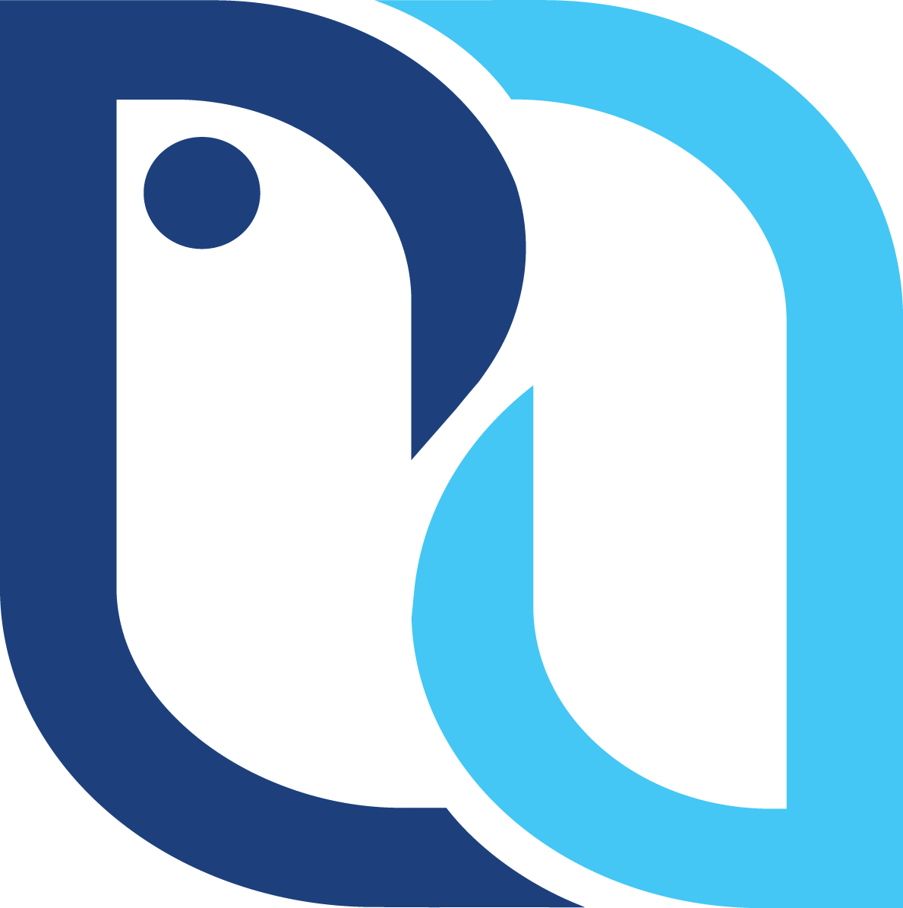

آکادمی نیکان
مرجع تخصصی آموزش
دورههای حسابداری
هوش مصنوعی در حسابداری
حسابداری مالیاتی
حسابداری جامع
تحلیل صورت های مالی
حسابداری پیشرفته
حسابداری بازار کار
دورههای برنامهنویسی و کامپیوتر
هوش مصنوعی
برنامه نویسی
طراحی وب
تولید محتوا
ICDL
دوره جامع شبکه